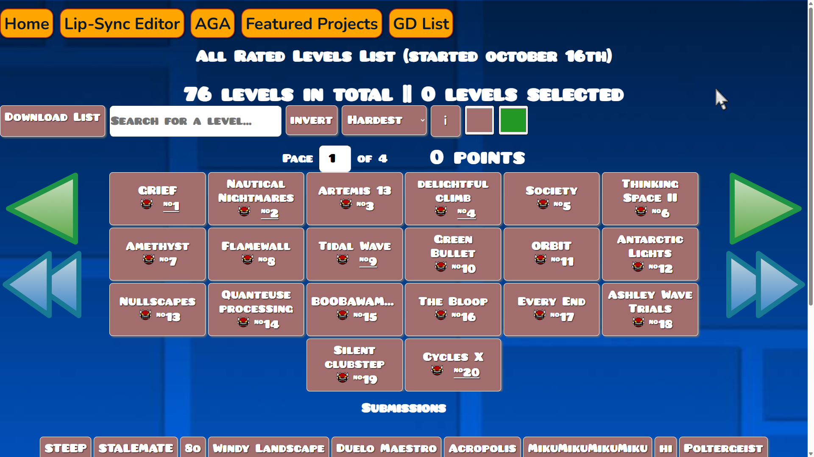
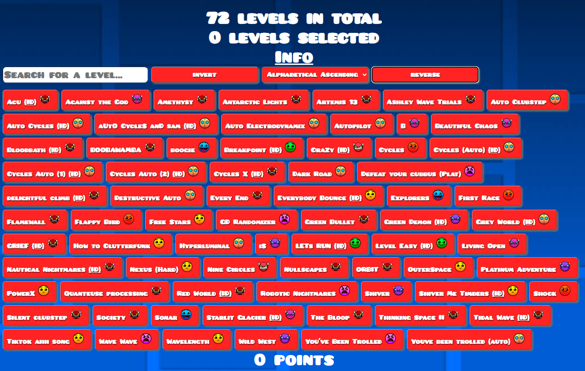
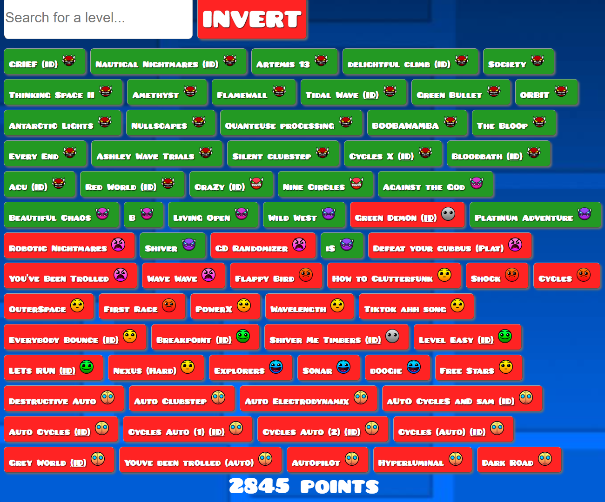

INFO
Go back
- October 24th - Moved BUSSIN to #43 (⬆️), iSpyWithMyLittleEye from #49 to #54 (⬇️)
- October 23rd - Added new levels and... just look at this.

- October 20th - GGS Our webpage is live on GitHub!
-
October 18th - Added sorting options ('Difficulty Descending/Ascending' and 'Alphabetical Descending/Ascending') and reverse button

- Updated inversion to filter by selection

- New background added October 17th
- Levels added October 17th -
- Acu
- delightful climb
- OuterSpace
- "aUtO CycleS anD sam", "Auto Cycles", "Cycles Auto", "Cycles Auto", "Cycles (Auto)", "Cycles X", "Nullscapes", "Antarctic Lights", "ORBIT", "Green Bullet", "Cycles (RobTop)" and a few more..
- Adding Platformers - October 16-17th (first extreme plat added october 17th - nautical nightmares at #2)
- First 50+ levels added October 16th